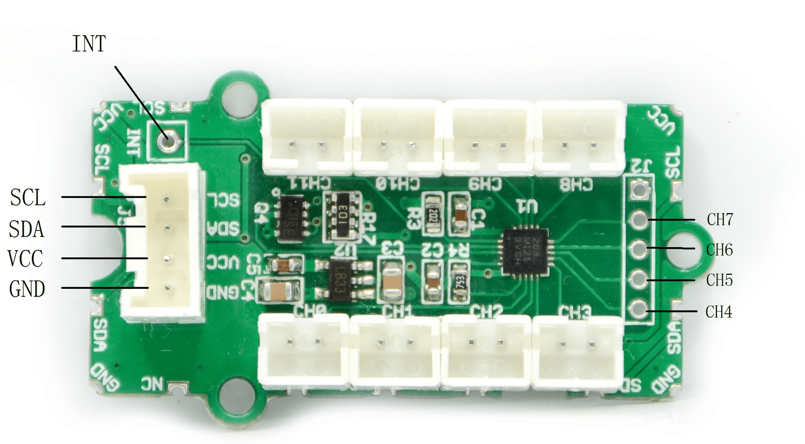
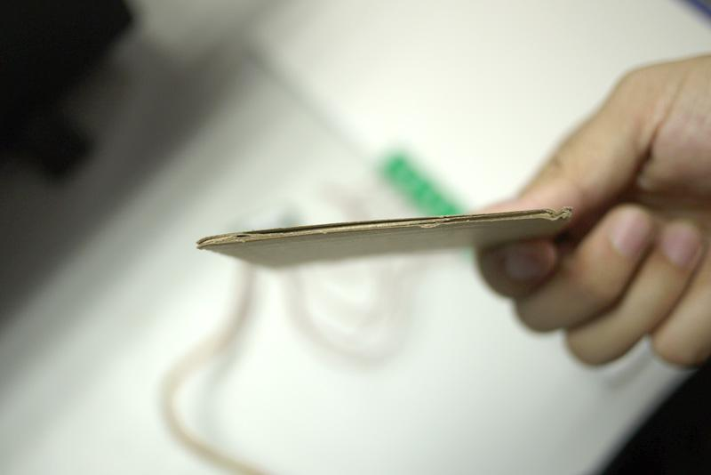
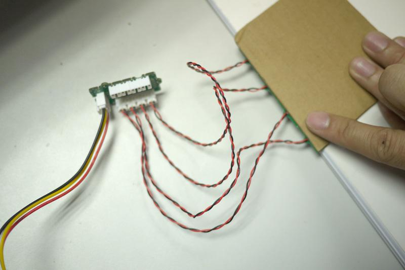

| Parameter | Value/Range |
|---|---|
| Operating voltage | 3~5.5V |
| Standby Mode Current | 2μA |
| Touch Channels | 12 (Including 4 with Touch feelers) |
| Communicating Protocol | I2C |
| I2C Address | 0x5A - 0x5D |

There are 12 electrodes CH0-CH11. CH0-CH3 are connected to 4 Touch feelers.
The CH4-CH11 are for customer expanding the function. If you need more, you can make the feelers by yourself.
The wires of feelers are twisted to reduce the impact of environment. The black(ground) wire can be cut off if high sensitivity is needed.
The INT pin has to be led out if customers want to use the interrupt pin of MPR121.
Following documents help in getting the user started with Grove.
NOTE: Since each electrode needs to be auto-configured by the MPR121 during power up and there is no power reset on the touch sensor controller, everytime you insert or remove a feeler, you need to reset the power of Seeeduino.
The feelers can also feel the human being fingers with something between, that's to say, you do not need to touch the feelers with your fingers indeed.


With a paperboard about 3 mm thick, the feeler can feel the touch of fingers, makes it a good solution for many applications.